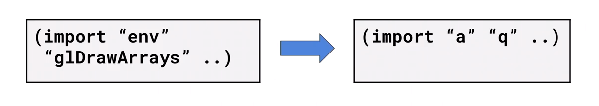
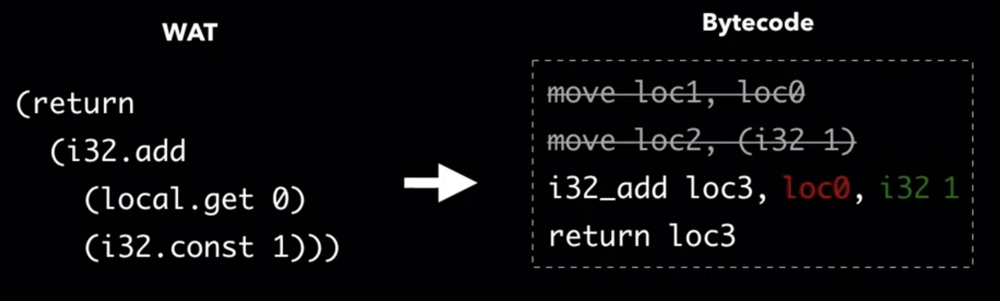
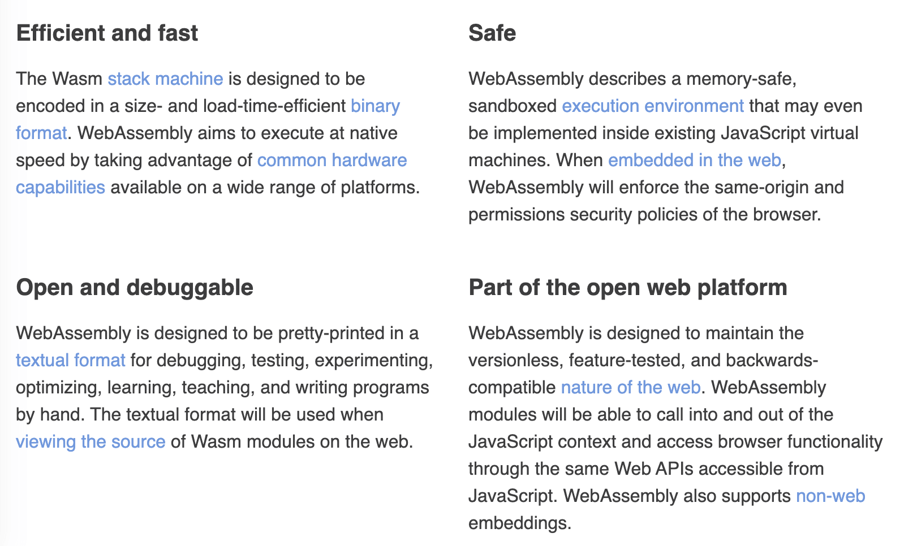

WebAssembly Summit 2020 — 议题深度解析（上）
第一届 WebAssembly Summit 峰会于2月10日在美国山景城的 Google 总部顺利召开。大会分享者有我们熟悉的科技漫画作者—— 来自Mozilla 的 Lin Clark、WebAssembly（下文简称 Wasm）的基础设施工具链 Emscripten / Binaryen 作者——来自 Google 的 Alon，以及众多来自各大知名互联网公司的 Wasm 研究和开发人员。WebAssembly Summit 是由 Wasm 社区举办，专门讨论 Wasm 当前和未来发展，以及其相关议题的全球性大会（A one day, single track, conference about all things WebAssembly.）。
自 Wasm 于2017年推出其第一个 MVP 版本标准后，Wasm 在应用领域的相关实践便开始百花齐放。一方面，处在 Post-MVP 的各个新标准提案不断快速发展（如 Thead，SIMD），并同时被浏览器厂商逐步实现。另一方面，在 Web 之外的领域，Wasm 也在 VM / Runtime 基础设施、编程语言集成、Nodejs、Package Management 以及云等各个领域大显身手。近两年，Wasm 生态发展的越来越快，旧的技术（Asm.js、Native Client）被其逐渐代替、新的领域（边缘计算、区块链）开始出现它的身影，甚至连 “Wasm 是否会代替浏览器上的 JavaScript？”这类问题也一度成为开发者们所讨论的焦点。时隔两年，第一次全球性 Wasm 技术大会，究竟有哪些值得我们关注的 Wasm 技术新动向？让我们一起来看一看。
安全性
Lin Clark 作为开场嘉宾为我们着重介绍了 Wasm 在应用安全性上的设计和考虑。回顾 20 年前，各大互联网公司在软件开发过程中，对代码的复用能力非常低；但 20 年之后，诸如 NPM，Pip 等代码包管理工具让我们不再需要从头到尾的、完全“独立”地开发一个应用，模块化的开发模式让我们可以大量重用社区中已经成熟的第三方模块。但在利用这些模块功能的同时，我们也不得不面对另一个问题，那就是随第三方代码而来的代码安全性问题。
一个应用在运行时会依赖第三方模块所提供的功能，因此在传统的软件开发模式中（譬如 Nodejs），第三方代码同样共享着“主应用”所拥有的各类系统接口权限（如 Socket、File Operation）和资源访问（如 Memory）权限。不仅如此，由于模块化开发模式，使得代码的整体依赖成树状关系，因此整颗依赖树上的所有模块代码都会共享同样的代码权限，而这则无疑大大降低了应用整体的安全性，给第三方代码中所可能包含的恶意代码或漏洞代码以可乘之机。
通过对一个真实的、通过第三方模块恶意代码窃取用户数字货币的案例进行总结，我们可以发现攻击者通常会按照以下时间顺序来对终端用户逐步发起攻击：
- Day 0：攻击者创建模块；
- Day 2：攻击者将模块作为第三方底层依赖；
- Day 17：攻击者为模块添加恶意代码；
- Day 41-66：目标应用通过升级模块引入恶意代码；
- Day 90：攻击被用户发觉；
通常来说，以上述案例为例，恶意代码需要同时具备以下几种权限才能够对终端用户成功地发起攻击：
- 操作系统资源访问权限，包括用于存放 seed 等敏感数据的内存资源、用于发送窃取的数据 Socket 资源；
- 操作系统接口调用权限，包括文件的读写权限，以及 Socket 的操作权限。
据 Github 官方调查统计，自 2017 年到 2019 年，NPM 上包含有恶意代码的模块数量逐年增加，并且攻击者的恶意代码目标逐渐向终端用户靠近，攻击实施者更加具有耐心，企图进行可以暗中实施的、经过精心策划的攻击。
抛开第三方模块主动发起的恶意代码攻击，应用自有的代码漏洞也同样为攻击者提供了可乘之机，比如“经典”的 ZipSlip 任意文件覆盖漏洞。ZipSlip 没有对解压缩文件时的目标地址进行校验，而是直接进行了拼接，因此当遇到包含有恶意代码文件的压缩包时，这些文件便可经由此漏洞被解压到整个文件系统的任意位置，当然前提是只要应用的执行者拥有文件目录的写权限即可。在 NPM 中具有类似漏洞的代码包只有59%被修复，有超过40%的代码包依赖有至少含有一个已知漏洞的 NPM 第三方模块依赖。但现实的情况是，诸如此类的“恶意代码”或者“代码漏洞”问题实际上无法被完全避免，因此我们需要考虑其他的方式来保证应用的运行安全。
究其根源，发生类似的安全性问题主要是由于：恶意代码拥有了本不该拥有的系统资源和系统接口权限。我们不能够相信代码本身的行为方式能够完全满足我们对安全性的要求。那回过头来，我们看一看 Wasm 是怎样做到能够保证应用的运行安全性的。
类比于操作系统上每个应用在运行时的独立进程（Process），每一个 Wasm 模块在实例化运行时也都有自己独立的运行时沙盒环境（Sandbox），对应着独立的可用内存资源以及调用栈。但与传统的操作系统“进程”所不同的是，每一个实例化的模块都只能使用在实例化时被主动分配的系统资源（内存）与接口能力（系统调用）。不仅如此，相对于传统进程需要通过“序列化”与“反序列化”才能够在进程间传递信息（IPC）有所不同，Wasm 实例之间的消息传递可以更轻量地完成。
Interface Types 提案
默认情况下，Wasm 模块之间只能够传递最基本的数值类型数据，如整型（Integer）以及浮点型（Float）。但借助于 “Interface Types” 提案（Phase 1），模块实例之间便可以通过最小成本来直接、安全地与更多复杂的数据类型进行交互，比如常用的字符串类型。在进行复杂类型数据交互时，Wasm 引擎会将复杂数据从被调用模块实例的内存空间直接拷贝到调用者的内存空间，而非数据共享。这降低了数据共享时被恶意代码篡改的风险，同时相较于传统“进程”模型而言，也减少了数据传递时序列化与反序列化的性能开销。
WASI
Wasm 模块除了会对其所拥有的数据进行“隔离”以外，对于应用在 Web 浏览器以外的 Wasm 模块来说，对模块实例所能够拥有的系统接口权限进行“隔离”也是势在必行的安全性措施，而 WASI（WebAssembly System Interface）的出现便解决了这个问题。通过该提案，我们可以有针对性地为每一个独立的模块实例提供不同的操作系统接口 / 资源权限。这些操作系统接口或资源权限可以在每个模块进行实例化时被调用者主动指定。而这种安全策略便是我们所熟知的 “Capability-based Security”，一种基于给定资源的安全性控制策略。
WebAssembly Nanoprocess
基于上述我们提出的 Wasm 模块在数据及权限方面所使用的安全性策略，我们提出了一种新的 Wasm 应用构建模式 — “Wasm Nanoprocess”。一般来说，一个完整的大型 Wasm 应用可能同时包含有多个相互依赖的底层 Wasm 模块，由于每一个模块实例都用于自己独立的数据、资源以及权限控制，因此我们可以称每一个实例化模块为一个独立的 “nanoprocess”，翻译过来即“纳米进程”。
当一个含有恶意代码的 Wasm 模块被“链接”到整个应用的依赖树中时，由于应用的各依赖模块所能够使用的资源以及系统接口权限均来自于最上层的调用者，即需要在应用运行的入口模块中被指定，然后再由该模块向下层依赖模块进行分发，因此当恶意模块的内部代码需要使用某种未经授权的额外资源时，整个模块依赖树的 “import” 段签名便会发生错误，并在运行时向上层用户抛出该异常，以提示某个模块的某些特定资源或者权限没有被导入。而在这种情况下，特殊的权限调用需求便会引起人们的注意。
而即便恶意代码获得了特定操作系统接口的执行权限，但想要从其他依赖模块的实例中获取对应内存段中的敏感信息，也并非易事。由于我们之前提到的 Wasm 模块内存数据隔离特性，只有在模块主动向外部暴露（通过 “export” 段）特定数据，或者直接调用（动态链接）目标模块内的方法时才能够将自身内存段中的数据传递过去。因此，通过限制恶意代码对数据以及系统接口权限的访问和使用，“Wasm Nanoprocess” 这种构建模式才可以在最大程度上保证 Wasm 应用及其所依赖第三方模块的安全性。
Bytecode Alliance
技术社区的繁荣离不开一个健康、可持续发展的生态环境。为了能够让 Wasm 离用户走的更近，而不单只是面对生硬的标准，“Bytecode Alliance” 字节码联盟成立了。联盟的宗旨在于希望能够为开发者提供健全的、基于各类安全策略（包括上述的 Nanoprocess 策略）构建的、成熟的开发工具链（虚拟机、编译器以及底层库）生态，让开发者可以在各类环境下快速构建 Wasm 应用而不用考虑安全性等基本问题，将目光更多地专注于应用本身的设计与开发上。
性能
如果说安全性是一个 Wasm 应用需要考虑的第一要务，那么性能便是除此之外的另一个“重中之重”了。Alon 为我们带来了关于 Wasm 应用性能优化技巧的分享，相较传统基于 JavaScript 构建的 Web 应用来说，Wasm 由于使用了二进制格式（Binary Format），因此同样大小的模块文件可以存储更多的代码信息。不仅如此，由于 Wasm 模块一般是从 C / C++ / Rust 等强类型语言代码编译而来的，因此我们也能够借助编译器来对原始代码进行诸如 DCE（Dead Code Elimination）等代码优化处理。但另一方面需要注意的是，从强类型语言到 Wasm 的转换并没有特意为 Web 平台进行优化，因此诸如 C++ 中对 STL、模板等特性和库的大量使用则可能会使最终生成的 Wasm 模块文件大小出乎我们的意料。下面我们将以一个使用 C++ 开发的，基于 Emscripten 构建的 Wasm 项目为例，来介绍整个开发流程中可以使用的性能优化技巧。
压缩代码
在服务器上启用 gzip 压缩，或者使用 Brotli（由 Google 开发的一种通用无损压缩算法）。同时对 Emscripten 生成的 JavaScript 胶水文件进行压缩。
使用优化器
使用 wasm-opt 对 Wasm 二进制文件进行优化处理。wasm-opt 是一个通用的 Wasm 二进制代码优化器，它被默认附带在 Binaryen 的工具链集合中。据统计，对于由 LLVM-Wasm 后端直接生成的 Wasm 二进制文件，wasm-opt 可以有效优化其约 20% 的文件体积。在 wasm-opt 内部，优化器会对 Wasm 二进制代码进行诸如 DCE，“常量传播”，“内联” 等一系列常规的优化操作。除此之外，基于 Wasm 标准虚拟指令集的结构，优化器还会进行如 “Local Optimizations”、“Memory Segment Optimization” 以及 “Structured Control Flow” 等其他共68项特殊优化流程（Pass），下面我们介绍其中一个经典的优化流程。
RemoveUnusedBrs
该优化阶段主要用于对如下情况进行字节码上的精简替换。
在左侧给出的 WAT 代码中我们可以看到，一个由 block 和 br_if 组成的“条件中断”结构。当 X 为“真”时，执行流程会跳过整个 block 结构；反之当 X 为“假”时，则会执行 Y 内的代码逻辑。这里我们将用右侧，使用 if 实现的、具有完全相同逻辑的“条件判断”结构来代替左侧部分的代码。这里我们将两段 WAT 代码分别对应的字节码展示出来，即：
- 左侧： … 02 40 (X) 0d 00 (Y) 0b …
- 右侧： … (X) 45 04 40 (Y) 0b …
可以看到，相较于左侧的原始字节码，新改写后的右侧代码可以少生成 1byte 对应的二进制字节码，降低了整个二进制模块文件的体积。而如果把 wasm-opt 中所有类似的精细优化过程都加起来，平均下来则可以优化目标 Wasm 模块文件多达20%的体积。wasm-opt 命令行工具一般跟随 Binaryen 工具套件一同发行，当然其也有对应的 JavaScript 版本以及线上开箱即用版本：http://wasm-shr.ink。
审视字节码
我们可以通过对 Wasm 二进制文件的字节码进行 Profiling 来审视对应的源代码是否还有可以被优化改进的空间，这些常用的性能分析工具有如下几种：
- Bloaty McBloatface — Google 自研的二进制文件分析器，支持 Wasm 格式；
- Twiggy — 来自 Rust 社区的 Wasm 文件分析器；
- wasm-opt’s –func-metrics；
优化源语言
除了可以直接对 Wasm 的二进制字节码进行分析优化以外，我们还可以从源语言以及对应的编译器工具链入手来进行优化，这里以 C++ 为例。为了能够减小生成的 Wasm 模块文件体积，如果在代码中没有使用 C++ Exception 相关的特性，建议为编译器指定 “-fno-exceptions” 参数以关闭编译器对异常相关特性的支持。类似的还有：RTTI 相关特性的参数 “-fno-rtti”。使用模板（Templates）会产生重复的代码段，进而增加最终产物的体积，在实际编码时需要注意。虚函数（virtual）的调用可能会阻止编译器 DCE 的进行，进而弱化了优化结果。更进一步，尽量使用 C-like Array 来代替 C++ STL 中的 std::vector、使用 printf 代替 std::iostream 等等。由于 STL 中的数据容器和对象一般都经过了高度的抽象和封装，因此对应最终生成的 Wasm 字节码体积通常会比真正使用到的部分大很多。
除了关闭不需要的编译器功能、使用低抽象层次语言特性之外，我们也可以在某种程度上直接使用 Web 平台为我们提供的 API 来提供应用的运行效率。比如在下面这段代码中，我们借助 Emscripten 为我们提供的 EM_JS 宏，来在 C++ 代码中直接调用浏览器的 API “console.log” 以向宿主环境打印消息。相比调用 printf 函数，这种直接使用宿主环境 API 的方式可以让我们省略掉很多并不需要的、在胶水代码中实现的抽象环节。通常来说，这些抽象环节主要用来弥补不同平台之间的函数调用差异。
优化编译链路
除了可以对源语言代码进行优化以外，我们还可以对编译器链路进行优化。除了我们上述提到的几个 C / C++ 编译器可以直接使用的优化标记以外，Emscripten 也为我们提供了众多可选的优化参数，一些常用的优化标记如下所示。
- -O3 / -Os / -Oz：与 clang / gcc 类似的全局优化标记；-O3 重在提高优化速度，-Os 重在优化产物体积，而 -Oz 则处在两者之间。 Emscripten 会自动调用 wasm-opt 对生成的 Wasm 二进制文件和 JavaScript 胶水文件进行优化，比如下图所示，将 Wasm 模块 “import” 段中的复杂符号名替换成简单符号，以同时压缩 JavaScript 文件（缩短实例化时的导入对象名称）和 Wasm 二进制文件的体积；

- -s MALLOC-emmalloc：Emscripten 默认使用 dllmalloc 内存分配器来作为 malloc 的实现。但在不需要分配大量“可变大小”内存块的情况下，可以使用 emmalloc 来作为 malloc 的实现。相较于 dllmalloc 而言，emmalloc 实现的代码量仅为前者的三分之一，可以在保持相同内存分配效率的同时大大减小 Wasm 模块的体积；
- –closure 1：通过该标记，Emscripten 会自动调用 Google Closure Compiler 对最后生成的 JavaScript 胶水文件进行压缩；
- -s ENVIRONMENT=web：如果生成的 Wasm 应用仅需运行在 Web 平台，那么可以通过指定该参数来让 Emscripten 去掉产物中为支持 Nodejs 环境而加入的一些代码；
关于更多其他高级标记 / 参数的具体用法，可以查阅 Emscripten 的官网文档。
未来
在不久的将来，我们将借助 Wasm 正在发展中的多项提案来解决我们现阶段遇到的一些问题，比如借助 Wasm 的 “Exception Handling” 提案，我们可以更好地在 Wasm 中对接 C++ 或其他强类型语言中的 Exception 特性。同样的，借助于即将到来的 “Multiple Tables” 提案以及 LLVM 的帮助，我们可以更好地在 Wasm 中处理面向对象强类型语言中的诸如“虚函数调用”、“转型”等涉及虚函数表的相关特性。
浏览器引擎
Tadeu 为我们介绍了 JavaScriptCore（下文简称 JSC）上为 Wasm 新增的解释器 — LLInt（Low Level Interpreter）的一些基本情况。JSC 上有专门为执行 Wasm 字节码增设的两个 JIT 编译器，它们分别是：BBQ（Building Bytecode Quickly）以及 OMG（Optimized Machine Code Generator）。对比 V8，这里的 BBQ 类似 Liftoff，主要用于快速编译并生成机器码，降低应用启动时间；而 OMG 则类似于 TurboFan，主要用于优化热代码，并生成经过优化的机器码，提高运行效率。但实际上，由于 BBQ 的性能并没有那么令人满意，因此 LLInt 的出现便是用来解决应用冷启动速度（start-up time）慢的问题。LLInt 希望能够在加快 Wasm 应用冷启动速度的同时，并遵守 BBQ 在调用规范（Calling Conventions）以及堆栈、寄存器使用上的一些约定，使得后续的 JIT 过程可以直接依赖 LLInt 在此之前得到的成果。
优化策略
其中比较有意思的一项优化策略是 “Constant & Local Propagation”，听起来跟普通编译器使用的“常量传播”优化十分类似。可以参考下图，这里左边的 WAT 经过平展（flatten）处理后可以对应到 Wasm 字节码的四个虚拟指令，四个虚拟指令又对应到如下的四个实际的寄存器操作。可以看到对于前两个寄存器操作，由于这里 “loc2” 寄存器内的常量内容是已知的，因此可以直接将其带入并替换到 “i32_add” 操作中，以减少整体的指令执行次数。
经过指令参数替换后的结果：

而从整个编译器的执行链路上来看，LLInt 会作为所有方法体的启动执行单元。随着方法内部调用计数器的不断增加，BBQ 及 OMG 会相应随之启动，并执行进一步的优化编译。这里可以看到，当在主函数内部遇到高计算量代码时，编译链路会直接启动 OMG 进行深度的优化编译，并通过 OSR（On-Stack Replacement）来对不同优化层级上的调用栈数据进行替换。
暂停与思考
Ashley 为我们带来了一些对 WebAssembly 这项技术的思考。首先，她强调了一个事实，即 “WebAssembly 的出现并不是为了取代 JavaScript”。但是 WebAssembly 从出现至今，仍然有很多地方并没有做到那么令人满意，其中第一个也是让很多人感同身受的地方，那就是 WebAssembly 并没有成功地将这项好用的技术推广给最需要它的人。如下图所示可以看到，当一个满怀期待，对这项新技术充满渴望的开发者打开 Wasm 官网时，映入眼帘的是如下用各种抽象的专业术语“堆砌”而成的，对这项新技术的枯燥的介绍。因此，“not human-readable” 的官网和文档成为了初期阻碍 Wasm 快速发展的一个重要因素。

Ashley 想要告诉我们的是，我们应该花更多的精力在如何能够让 Wasm 成为用户的强大武器上，而不是单纯只关注于如何把这个“武器”变得更加强大。从现阶段来看，Wasm 这项技术已经从 Web 走到了非 Web 领域，并且除 MVP 标准外还有多达 24+ 个新的提案正在并行着向前推进。但调查统计却发现，在 Wasm 腾空出世的这两年里，有超过半数的应用场景都仅局限于区块链和虚拟货币，类似 “AutoCAD 移植”这类标杆性的应用场景也只是昙花一现，并且也很难被普通开发者所学习效仿。如今的 Wasm 社区里，可能有太多的人只关注在 Wasm 的技术标准上，他们都变成了单纯的技术追求者，而并没有思考如果从普通开发者的角度来看，如何才能够快速地了解这项技术，并且可以上手用它来做点什么。
拿 《The Rise of Worse Is Better》这篇经典计算机科学论文的中心思想作为总结：简洁（Worse，功能少、简单以及实现容易）的编程语言或者软件系统，往往会比那些大而全、功能复杂的要更好（Better）。类比到 Wasm，一次性把它做的尽善尽美然后再让用户去使用（指通过更”友善”的方式接近用户）；或者，在只有一部分核心功能的时候就让用户提前使用，然后再根据他们的反馈不断完善。你觉得哪种方式更好呢？